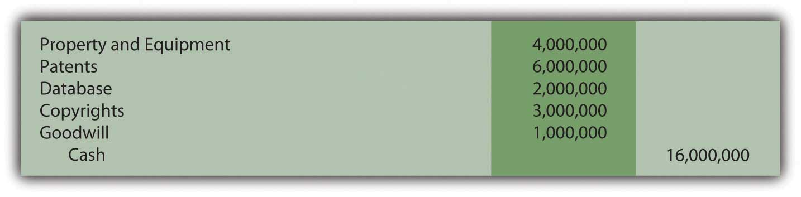

At the end of this section, students should be able to meet the following objectives:
Question: When one company buys another, the subsidiary is often holding rights to numerous intangibles. As mentioned, acquisitions often take place to gain those rights. The parent places those assets that qualify on its own balance sheet at fair value to show that a portion of the amount paid for the subsidiary was the equivalent of an acquisition price for these items. That is a major reason why companies such as Microsoft and Procter & Gamble report billions of dollars in intangible assets. They have probably purchased many of them by acquiring entire companies.
However, according to U.S. GAAP, certain requirements have to be met before such intangibles are recognized as assets on a consolidated balance sheet following a takeover. What rules must be satisfied for an acquiring company to record an intangible (previously owned by an acquired company) as an asset? A new subsidiary could very well have hundreds of intangibles: patents, copyrights, databases, smart employees, loyal customers, logos, and the like. When the company is acquired, which of these intangibles are recognized on the consolidated balance sheet produced by the new parent?
Answer: FASB has stated that a parent company must identify all intangibles held by a subsidiary on the date of acquisition. For consolidation, the fair value of each of these intangibles is recorded by the parent as an asset but only if contractual or other legal rights have been gained or if the intangible can be separated and sold. This guideline serves as a minimum standard for recognition of intangible assets in a corporate takeover:
Patents, copyrights, trademarks, and franchises clearly meet the first of these criteria. Legal rights are held for patents, copyrights, and trademarks while contractual rights provide the right to operate franchises. By acquiring the subsidiary, the parent now owns these same rights and should record them on the consolidated balance sheet at fair value.
Other intangibles that can be separated from the subsidiary and sold should also be consolidated at fair value. For example, an acquired company might have a database containing extensive information about its customers. After purchasing the subsidiary, this information could be separated from that company and sold. Thus, on the date the subsidiary is purchased, the parent should recognize this database as an intangible asset at fair value to reflect the portion of the acquisition price paid to acquire it.
Link to multiple-choice question for practice purposes: http://www.quia.com/quiz/2092909.html
Question: When one company buys another, payment amounts will likely be negotiated to compensate the seller for intangibles where contractual or legal rights are held or where the asset can be separated and then sold. Thus, parent companies who buy subsidiaries (especially in industries such as technology) will likely recognize significant intangible asset balances on the subsequently consolidated balance sheet.
However, some intangibles have value but fail to meet either of these two criteria. Customer loyalty, for example, is vitally important to the future profitability of a company, but neither contractual nor legal rights are present and loyalty cannot be separated from a company and sold. Hence, customer loyalty is not reported as an intangible asset despite its value. Much the same can be said for brilliant and creative employees. A value exists but neither rule for recognition is met.
The owners of a company that is being acquired will argue for a higher price if attributes such as these are in place because they provide for higher profitability in the future. The amount paid to obtain the subsidiary is impacted although these intangibles do not meet the criteria for separate reporting as assets. How is this additional acquisition cost reported by the parent in producing consolidated financial statements?
Assume Giant Corporation pays $16 million to acquire Tiny Corporation. The subsidiary (Tiny) owns property and equipment worth $4 million. It also holds patents worth $6 million, a database worth $2 million, and copyrights worth $3 million. The total value of those assets is only $15 million. For convenience, assume Tiny has no liabilities. Assume that the parent agrees to pay the extra $1 million because the subsidiary has customer loyalty valued at $600,000 and a talented workforce worth $400,000. How is this additional $1 million reported after the takeover? What recording is made when a parent buys a subsidiary and pays an extra amount because intangibles are present that have value but do not meet the criteria for separate reporting?
Answer: Every subsidiary intangible (such as patents and databases) that meets either of the official criteria is consolidated by the parent at fair value. Any excess price paid over the total fair value of these recorded assets (the extra $1 million in this question) is also reported as an asset. It has a cost and an expected future value. The term that has long been used to report an amount paid to acquire a company that exceeded all the identified and recorded assets is “goodwill.” Some amount of goodwill is recognized as a result of most corporate acquisitions. In this example, it specifically reflects the value of the customer loyalty and the quality of the subsidiary’s workforce.
If Giant pays $16 million for the stock of Tiny when its reportable assets have a value of only $15 million, the following entry is made by Giant to consolidate the two companies. As shown, the additional $1 million is labeled as goodwill, which will then be included within the intangible assets.
Figure 11.4 Giant Company Buys Tiny Company—$1 Million Paid over Fair Value of Assets

Question: In the above illustration, the parent paid this extra $1 million for specified intangibles. However, the customer loyalty and the talented workforce could not be recorded separately as assets because neither met the required criteria. Instead, a goodwill balance was created.
Is the reporting any different if the parent simply paid this amount as a result of serious negotiations? Assume, for example, that Giant agreed to the additional $1 million to obtain Tiny because that company’s owners refused to sell for less. Giant believed that the $16 million price was still a good investment even though it required paying $1 million more than the value of the assets (tangible and intangible) that could be identified. If an acquiring company pays an additional amount to purchase a subsidiary without a specific rationale, is this cost still recorded as goodwill?
Answer: The acquisition of one company by another can require months of intense negotiations. One company wants to collect as much as possible; the other wants to pay as little as possible. Compromise is frequently necessary to arrive at a figure that both parties are willing to accept. In most cases, the new parent has to pay more than the sum of the value of all individual assets to entice the owners of the other company to sell.
Sometimes, as in the initial example with the customer loyalty and talented workforce, the reason for the added amount is apparent. More likely, the increased payment is simply necessary in order to make the deal happen. Because the extra amount is sacrificed to gain control of the subsidiary, it is still labeled by the parent as an asset known as goodwill. The rationale does not impact the accounting. Any extra acquisition price settled on to acquire a subsidiary appears in the parent’s balance sheet as goodwill and is shown as an intangible asset.
Link to multiple-choice question for practice purposes: http://www.quia.com/quiz/2092944.html
Question: Buildings, equipment, patents, databases, and the like all have costs that will be assigned to expense over an expected life as they help generate revenues. Goodwill is a different type of asset. It either represents a subsidiary attribute (such as customer loyalty) that is too nebulous to be recognized specifically as an intangible asset or an extra payment made by the parent as a result of the negotiation process. What happens to a cost labeled as goodwill after the date a subsidiary is acquired? How does Microsoft or Yahoo! account for their large goodwill balances over time? Is this asset like land that simply continues to be reported at historical cost potentially forever or, possibly, like equipment that is depreciated systematically over some anticipated useful life?
Answer: Because goodwill is the one asset on a balance sheet that is not tied to an identifiable benefit, no attempt is made to determine an anticipated life. Consequently, unlike most intangibles, the assigned cost is not amortized to expense. A goodwill balance can remain unchanged for decades after a subsidiary is purchased. However, the reported figure is reduced immediately if the value is ever judged to be impaired. Attributes such as customer loyalty or a talented workforce might continue in place for years or disappear in a short period of time. If goodwill is merely a premium paid to acquire a subsidiary, the justification for that excess amount could vanish quickly through poor management decisions or environmental factors. The value of all assets is tentative but probably none is more so than goodwill.
Although a cost recorded as goodwill is not amortized over time, its ongoing worth is not assumed. Instead, a test to check for any loss of that value is performed annually. This verification process is more complex than can be covered in an introductory course. The result, though, is important to understand. In the event goodwill has declined in value, an impairment lossReported for long-lived assets when certain rules are met that indicate that fair value has dropped below cost so that the cost cannot be recovered. is recorded to reduce the reported balance. Although not identical, the accounting is similar in some ways to the impairment test for land, buildings, and equipment demonstrated in the previous chapter.
In 2000, Time Warner and America Online (AOL) merged. Because of the perceived benefit of combing these two companies, a huge premium was paid and reported as goodwill on the consolidated balance sheet. Just two years later, it was obvious that the anticipated synergies from this transaction had not developed as expected. In simple terms, too much had been paid by the owners to create the merger. The value of the combined companies had not achieved their overly optimistic projections. Consequently, goodwill was reduced in 2002 by nearly $100 billion with a loss of that amount being reported by the consolidated company. The goodwill account was not amortized to expense but the eventual impairment had to be recognized.
Link to multiple-choice question for practice purposes: http://www.quia.com/quiz/2092964.html
When a parent acquires another company, all intangibles held by that subsidiary must be identified and consolidated at fair value but only if either of two criteria are met. Recognizing these assets is necessary if legal or contractual rights are held or the intangible can be separated from the company and sold. Other amounts are often included in the acquisition price to compensate for identifiable intangibles (such as customer loyalty) that do not meet either of these criteria. Or an extra payment is necessary simply to entice the owner to sell. In either situation, this additional amount is reported as goodwill, an intangible asset that then appears on the consolidated balance sheet. Goodwill is not amortized over time but rather is checked periodically for impairment with a loss recognized if the value has declined.